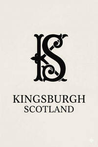

Trade Mark Journal No.2025/043 24 October 2025
UK00004276402 10 October 2025 (3,4,14,18,20,24,25,26,27)

- Class 3
- Perfumes; Fragrances; Oils for perfumes and scents; Perfumery and fragrances; Perfume; Aromatics for perfumes; Perfume oils; Liquid perfumes; Perfumes for ceramics; Aromatics for fragrances; Colognes; Extracts of perfumes; Scents; Extracts of flowers [perfumes]; Flowers (Extracts of -) [perfumes]; Extracts of flowers being perfumes; Fragrances for automobiles; Natural oils for perfumes; Musk [perfumery]; Fragrance sachets; Perfumes for cardboard; Perfumeries; Household fragrances; Perfumery products; Solid perfumes; Cedarwood perfumery; Body deodorants [perfumery]; Body fragrances; Perfumed creams; Perfumed sachets; Scented soaps; Fragrance emitting wicks for room fragrance; Scented oils; Fragrance refills for non-electric room fragrance dispensers; Synthetic perfumery; Fragrance sachets for eye pillows; Perfumed powders [for cosmetic use]; Perfumed powders; Moisturisers [cosmetics]; Skin fresheners [cosmetics]; Scented sachets; Roll-on deodorants [toiletries]; Perfumed soap; Cosmetics; Incense sachets; Skincare cosmetics; Cosmetics in the form of lotions; Fragrant sachets; Air fragrance reed diffusers; Eau de colognes; Reed diffusers; Scented water for fragrancing; Potpourri sachets for incorporating in aromatherapy pillows; Scented room sprays; Incense spray; Geraniol for fragrancing; Shower oils; Aromatic oils for the bath; Scented fabric refresher sprays; Scented body spray; Ethereal oils for fragrancing; Gel sprays being styling aids; Essences for fragrancing; Scented fabric refresher spray; Scented linen sprays; Aromatherapy pillows comprising potpourri in fabric containers; Bath oils.
- Class 4
- Candles; Candles and wicks for candles for lighting; Tealight candles; Votive candles; Scented candles; Wicks for candles; Nightlights [candles]; Candles for use as nightlights; Candles for lighting; Fragranced candles; Wicks for candles for lighting; Candles and wicks for lighting; Tallow candles; Candles in tins; Candle torches; Perfumed candles; Candles (Perfumed -); Soy candles; Christmas lights [candles]; Candles for use in the decoration of cakes; Table candles; Tea light candles; Church candles; Fruit candles; Floating candles; Aromatherapy fragrance candles; Beeswax for use in the manufacture of candles; Candles for night lights; Wax for making candles; Candle wax; Musk scented candles; Tealights; Grave candles, non-electric; Christmas tree decorations for illumination [candles]; Bougies in the nature of wax candles; Christmas tree candles; Candles (Christmas tree -); Christmas tree ornaments for illumination [candles]; Candles for absorbing smoke; Candle assemblies; Wicks for lighting; Special occasion candles; Wicks for oil lamps; Wax lights; Wicks (Lamp -); Lamp wicks; Wax for lighting; Tea lights; Candles containing insect repellent; Tapers for lighting; Butane for lighting.
- Class 14
- Jewellery; Necklaces [jewellery]; Brooches [jewellery]; Jewellery brooches; Jewellery, including imitation jewellery and plastic jewellery; Pendants [jewellery]; Bracelets [jewellery]; Brooches [jewellery, jewelry (Am.)]; Ornaments [jewellery]; Amulets being jewellery; Amulets [jewellery]; Pearls [jewellery]; Trinkets [jewellery]; Necklaces [jewellery, jewelry (Am.)]; Fashion jewellery; Jewelry; Gold jewellery; Lockets [jewellery]; Brooches [jewelry]; Jewelry brooches; Brooches being jewelry; Jade [jewellery]; Clasps for jewellery; Charms [jewellery]; Charms for jewellery; Jewellery charms; Enamelled jewellery; Pearls [jewellery, jewelry (Am.)]; Ornaments [jewellery, jewelry (Am.)]; Items of jewellery; Jewellery items; Costume jewellery; Decorative brooches [jewellery]; Trinkets [jewellery, jewelry (Am.)]; Rings being jewellery; Rings [jewellery]; Amulets [jewellery, jewelry (Am.)]; Pewter jewellery; Bracelets [jewellery, jewelry (Am.)]; Jewellery stones; Cloisonné jewellery [jewelry (Am.)]; Wristlets [jewellery]; Cloisonné jewellery; Cloisonne jewellery; Charms [jewellery, jewelry (Am.)]; Lockets [jewellery, jewelry (Am.)]; Chains [jewellery, jewelry (Am.)]; Rings [jewellery, jewelry (Am.)]; Jewellery products; Ivory [jewellery, jewelry (Am.)]; Shoe jewellery; Precious jewellery; Crucifixes as jewellery; Necklaces [jewelry]; Agate as jewellery; Pins [jewellery, jewelry (Am.)]; Jewellery chains; Chains [jewellery]; Ivory jewellery; Jewellery in semi-precious metals; Medallions [jewellery, jewelry (Am.)]; Jewellery chain; Jewellery caskets; Paste jewellery [costume jewelry (Am.)]; Paste jewellery [costume jewelry [Am.]]; Gold plated brooches [jewellery]; Pins [jewellery]; Pins being jewellery; Jewellery boxes; Amber pendants being jewellery; Jewellery for personal adornment; Pendants [jewelry]; Cabochons for making jewellery; Imitation jewellery; Jewellery chain of precious metal for necklaces; Body jewellery; Amberoid pendants being jewellery; Beads for making jewellery; Gold thread [jewellery, jewelry (Am.)]; Jewelry (Paste -) [costume jewelry]; Paste jewelry [costume jewelry]; Jewellery incorporating diamonds; Silver thread [jewellery, jewelry (Am.)]; Jewellery for pets; Fake jewellery; Personal jewellery; Jewellery in non-precious metals; Plastic costume jewellery; Imitation jewellery ornaments; Hat jewellery; Facial jewellery; Clips of silver [jewellery]; Jewellery findings; Crosses [jewellery]; Jewellery in the form of beads; Sterling silver jewellery; Bracelets [jewelry]; Jewellery incorporating pearls; Paste jewellery; Jewellery (Paste -); Pearls [jewelry]; Amulets [jewelry]; Jewellery made from gold; Jewellery articles; Articles of jewellery; Jewellery made from silver; Diamond jewelry; Jewellery chain of precious metal for anklets; Wire of precious metal [jewellery, jewelry (Am.)]; Jewellery containing gold; Jewellery chain of precious metal for bracelets; Lockets [jewelry]; Dress ornaments in the nature of jewellery; Jewellery in precious metals; Jewellery of precious metals; Clasps for jewelry; Jewelry stickpins; Threads of precious metal [jewellery, jewelry (Am.)]; Trinkets [jewelry]; Artificial jewellery; Jewellery for personal wear; Decorative pins [jewellery]; Jewellery fashioned from non-precious metals; Jewellery cases; Charms [jewelry]; Jewelry charms; Charms for jewelry; Jewellery rope chain for necklaces; Body costume jewellery; Jewellery fashioned of semi-precious stones; Bracelet charms; Bangle bracelets; Bracelets; Bead bracelets; Silver-plated bracelets; Necklace charms; Ankle bracelets; Bracelets for watches; Watch bracelets; Silver bracelets; Identification bracelets [jewelry]; Gold bracelets; Choker necklaces; Wooden bead bracelets; Jewellery rope chain for bracelets; Friendship bracelets; Flexible wire bands for wear as a bracelet; Necklaces; Plastic bracelets in the nature of jewelry; Identification bracelets of precious metal [jewelry]; Bracelets and watches combined; Pendant watches; Gold plated bracelets; Charity bracelets; Bracelets [charity]; Silver-plated necklaces; Earrings; Bib necklaces; Bracelets made of embroidered textile [jewelry]; Gold-plated necklaces; Silver necklaces; Silver-plated earrings; Gold necklaces; Bracelets of precious metal; Bracelets made of embroidered textile [jewellery]; Jewellery rope chain for anklets; Bracelets made of rubber or silicone with pattern or message; Silver earrings; Metal expanding watch bracelets; Scarf clips being jewelry; Wrist straps for watches; Straps for wrist watches; Rings [jewelry]; Gold earrings; Jewelry clips for adapting pierced earrings to clip-on earrings; Bangles; Gold-plated earrings; Jewel pendants; Clip earrings; Wrist watches; Pendants; Pendants for watch chains; Silver thread [jewelry]; Ring bands [jewellery]; Wristlet watches; Beads for making jewelry; Gold plated earrings; Pins being jewelry; Pins [jewelry]; Shoe jewelry; Hat jewelry; Gold thread jewelry; Gold thread [jewelry]; Jewelry hat pins; Hoop earrings; Platinum jewelry; Necklaces of precious metal; Closures for necklaces; Rhinestones for making jewelry; Earrings of precious metal; Rings [trinket]; Watchbands; Straps for wristwatches; Pierced earrings; Drop earrings; Gold medals; Gold rings; Gold chains; Gold plated chains; Imitation gold; Gold plated rings; Gold thread [jewellery]; Watches made of gold; Figurines made from gold; Silver alloys; Silver thread; Silver watches; Platinum [metal]; Platinum; Silver, unwrought or beaten; Cuff links made of gold; Medals made of precious metals; Jewellery coated with precious metals; Watches made of rolled gold; Figurines made from silver; Trinkets of bronze; Copper tokens; Tokens (Copper -); Jewellery of yellow amber; Platinum alloys; Watches; Chronographs for use as watches; Chronographs as watches; Chronographs [watches]; Dials for watches; Clocks and watches; Watches and clocks; Quartz watches; Straps for watches; Sports watches; Movements for clocks and watches; Movements for watches and clocks; Alarm watches; Faces for watches; Pocket watches; Diving watches; Housings for clocks and watches; Mechanical watches; Chains for watches; Parts for watches; Cases for watches and clocks; Automatic watches; Dress watches; Oscillators for watches; Electronic watches; Bands for watches; Watches for nurses; Women's watches; Solar watches; Fittings for watches; Stop watches; Cases for watches; Clocks and watches, electric; Table watches; Clocks and watches for pigeon-fanciers; Platinum watches; Divers' watches; Watch dials; Wristwatches; Watches for sporting use; Timepieces; Presentation boxes for watches; Chronographs for use as timepieces; Cases [fitted] for watches; Watches bearing insignia; Watch glasses; Watch fobs; Watch winders; Dials for clock and watch making; Dials [clock and watch making]; Watch clasps; Cases for watches [presentation]; Watches for outdoor use; Watch movements; Leather watch straps; Dials [clock- and watchmaking]; Dials for clock- and watchmaking; Watches incorporating a telecommunication function; Jewellery boxes and watch boxes; Watch straps of plastic; Watches incorporating a memory function; Electronic timepieces; Quartz clocks; Electric timepieces; Keyrings; Lanyards for keys; Key chains as jewellery [trinkets or fobs]; Retractable key rings [trinkets or fobs]; Key chains [split rings with trinket or decorative fob]; Fobs for keys; Leather key fobs; Keyrings of common metal; Key charms [trinkets or fobs]; Key holders [trinkets or fobs]; Key rings [trinkets or fobs]; Key chains [trinkets or fobs]; Key rings [split rings with trinket or decorative fob]; Key tags [trinkets or fobs]; Metal key fobs; Key fobs of imitation leather; Key rings [trinkets or fobs] of precious metal; Key fobs; Key chains for use as jewellery; Key fobs [rings] coated with precious metal; Key fobs, not of metal; Key rings and key chains, and charms therefor; Leather key rings; Cufflinks; Charms for key chains; Jewellery hat pins; Charms for key rings; Key chain tags; Cuff-links; Lapel pins [jewellery]; Key chains of precious metal; Decorative key rings; Charms.
- Class 18
- Handbags; Handbags, purses and wallets; Clutch purses [handbags]; Leather handbags; Fashion handbags; Pocketbooks [handbags]; Handbags for ladies; Ladies handbags; Straps for handbags; Clutch handbags; Handbags for men; Purse frames [handbags]; Purses [leatherware]; Purses; Handbags made of leather; Slouch handbags; Evening handbags; Leather purses; Handbags made of imitations leather; Gentlemen's handbags; Purses, not of precious metal [handbags]; Cosmetic purses; Ladies' handbags; Gent's handbags; Clutches [purses]; Leather bags and wallets; Purses, not made of precious metal [handbags]; Clutch purses; Briefcases [leatherware]; Handbag straps; Leather coin purses; Leather bags; Travelling bags [leatherware]; Imitation leather bags; Crossbody bags; Leather shopping bags; Tote bags; Cross-body bags; Bags for clothes; Multi-purpose purses; Bags; Briefcases [leather goods]; Shoe bags; Toiletry bags; Cosmetic bags; Luggage tags [leatherware]; Evening purses; Bags for sports clothing; Bags for umbrellas; Card wallets [leatherware]; Luggage, bags, wallets and other carriers; Bags made of imitation leather; Leather wallets; Travelling bags made of imitation leather; Straps for coin purses; Leather for shoes; Coin purses; Leather briefcases; Shoe bags for travel; Luggage bags; Bags made of leather; Change purses; Leather suitcases; Make-up bags; Makeup bags; Small clutch purses; Duffle bags; Canvas bags; Small purses; Carry-all bags; Canvas shopping bags; Garment bags for travel made of leather; Handbags, not of precious metal; Frames for coin purses [structural parts of coin purses]; Clutch bags; Textile shopping bags; Carryalls; Travelling bags made of leather; Bags (Game -) [hunting accessories]; Game bags [hunting accessories]; Duffel bags; Carry-on bags; Athletics bags; Satchels; Knitted bags; Grocery tote bags; Garment bags; Belt bags and hip bags; Chain mesh purses; Billfolds; Athletic bags; Backpacks; Duffel bags for travel; Flexible bags for garments; Knitting bags; Travel bags; Pochettes; Leather luggage tags; Briefcases made of leather; Adhesive tags of leather for bags; Bags for travel; Garment bags for travel; Bags (Garment -) for travel; Saddle belts; Shoulder belts; Belt bags; Leather shoulder belts; Belt pouches; Belts (Leather shoulder -); Wallets for attachment to belts; Shoulder belts [straps] of leather; Fitted belts for luggage; Leather cloth; Furniture (Leather trimmings for -); Leather trimmings for furniture; Luggage; Travel luggage; Trunks [luggage]; Luggage trunks; Trunks being luggage; Wheeled luggage; Straps for luggage; Luggage straps; Carry-on suitcases; Luggage tags; Tags for luggage; Labels for luggage; Luggage labels; Suitcases; Lockable luggage straps; Articles of luggage; Plastic luggage tags; Luggage covers; Leather luggage straps; Baggage; Travel baggage; Rubber luggage tags; Metal luggage tags; Straps for suitcases; Trunks and suitcases; Luggage label holders; Wheeled suitcases; Suitcase packing organizers / Luggage organizers set; Travelling bags; Suitcases with wheels; Trunks and travelling bags; Airline travel bags; Suitcase handles; Handles (Suitcase -); Overnight suitcases; Flight bags; Trunks and traveling bags; Wash bags for carrying toiletries; Baggage tags; Motorized suitcases; Traveling bags; Carrying bags; Bags for carrying pets; Cabin bags; Trolley duffels; Courier bags; Roller suitcases; Small suitcases; Wheeled bags; Compression cubes adapted for luggage; Smart suitcases; Umbrellas; Umbrellas and parasols; Parasols [sun umbrellas]; Frames for umbrellas or parasols; Sun umbrellas; Beach umbrellas; Patio umbrellas; Outdoor umbrellas; Garden umbrellas; Telescopic umbrellas; Golf umbrellas; Sun umbrellas [hand-held]; Beach umbrellas [beach parasols]; Parasols; Umbrellas for children; Covers for umbrellas; Sunshade parasols; Rainproof parasols; Beach parasols; Umbrella bags; Ribs (Umbrella or parasol -); Umbrella or parasol ribs; Carriers for suits, shirts and dresses.
- Class 20
- Furniture; Furniture and furnishings; Upholstered furniture; Metal furniture and furniture for camping; Dressers [furniture]; Cushions [furniture]; Wooden furniture; Furniture cabinets; Cabinets [furniture]; Patio furniture; Recliners [furniture]; Washstands [furniture]; Bentwood furniture; Pouffes [furniture]; Kitchen furniture; Bedroom furniture; Cupboards being furniture; Outdoor furniture; Nursery furniture; Drawers for furniture; Benches [furniture]; Household furniture; Bathroom furniture; Garden furniture; Lawn furniture; Desks [furniture]; Furniture shelves; Shelves [furniture]; Panelling for furniture; Furniture for kitchens; Kitchen dressers [furniture]; Wooden shelving [furniture]; Leather furniture; Slatted furniture; Stationery cabinets [furniture]; Chairs being office furniture; Shop furniture; Tables [furniture]; Seating furniture; Furniture moldings; Office furniture; Furniture (Office -); Indoor furniture; Furniture for bathrooms; Consignment shelving [furniture]; Lounge furniture; Furniture for storage; Storage furniture; Furniture of metal; Metal furniture; Furniture racks; Racks [furniture]; Bamboo furniture; Furniture parts; Trolleys [furniture]; Furniture partitions; Furniture frames; Arbours [furniture]; Furniture chests; Pet furniture; Lockers [furniture]; Pedestals [furniture]; Furniture partitions of wood; Furniture (Partitions of wood for -); Partitions of wood for furniture; Furniture for vivariums; Consoles [furniture]; Furniture for offices; Antique style furniture; Furniture for shops; Doors for furniture; Furniture doors; Transformable furniture; Stackable furniture; Furniture for washrooms; Mirrors [furniture]; Furniture for conservatories; Trestles [furniture]; Glass furniture; Metal cabinets [furniture]; Wooden racks [furniture]; Inflatable furniture; Furniture (Inflatable -); Seats [furniture]; Garden furniture manufactured from wood; Fireguards [furniture]; Metal shelving [furniture]; Furniture for children; Furniture for caravans; Joints for furniture; Modular bathroom furniture; Shelves being nursery furniture; Computer furniture; Drawers [furniture parts]; Drawers as furniture parts; Legs for furniture; Furniture for saunas; Furniture for camping; Camping furniture; Cane furniture; Screens [furniture]; Furniture screens; Domestic furniture; Furniture for babies; Countertops [furniture parts]; Metal office furniture; Sofa beds; Sofas; Bed chairs; Convertible sofas; Reclining armchairs; Wall sofas; Chair cushions; Couches; Extendible sofas; Armchairs; Chair beds; Divan beds; Bed mattresses; Recliners [chairs]; Air bed lounger; Reclining chairs; Upholstered convertible furniture; Lounge chairs; Furniture for sitting; Beds, bedding, mattresses, pillows and cushions; Cushions; Cushions (upholstery); Fitted bedroom furniture; Nap mats [cushions or mattresses]; Furniture being convertible into beds; Living room furniture; Bedding for cots [other than bed linen]; Bed slats; Chaise lounges; Seat cushions; Dining chairs; Lap desks being furniture; Futon mattresses [other than childbirth mattresses]; Chaise longue; Foldaway beds; Office armchairs; Japanese floor cushions (zabuton); Convertible chairs; Soft furnishings [cushions]; Settees; Chaise longues; Ottomans; Fitted kitchen furniture; Chairs; Elastic straps (constituent parts of sofa seats); Bedding for nursery cots [other than bed linen]; Pillows; Padded furniture; Furniture incorporating beds; Bed frames; Folding chairs; Bath pillows; Elastic straps [constitutive parts of sofa seats]; Swivel chairs; Mobile stools [furniture]; Chair legs; U-shaped pillows; Bunk beds; Shower chairs; Low armless fireside chairs; Folding beds; Storage boxes for pillows [furniture]; Divans made of wicker; Pet cushions; Cushions (Pet -); Divans; Rocking chairs; Beds incorporating divan bases; Height adjustable kitchen furniture; Tables; Desks and tables; Counters [tables]; Trestle tables; Dining tables; Picnic tables; Sideboard tables; Bedside tables; Drop-leaf tables; Display tables; Bench tables; Kitchen tables; Folding tables; Pedestal tables; Bases for tables; Coffee tables; Console tables; Marble tables; Tables for use in gardens; Drafting tables; Occasional tables; Drawing tables; Dressing tables; Pasting tables; Conference tables; Side tables; Office tables; Tea tables; Massage tables; Computer tables; Mosaic tables; End tables; Work tables; Tables of metal; Writing tables; Draughtman's tables; Dining room tables; Camping tables; Planning tables; Drafting tables [furniture]; Draftsmans' tables; Decorators' tables; Table tops; Dressers [dressing tables]; Card index tables; Three-mirror dressing tables; Chopping blocks [tables]; Height adjustable tables; Changing tables for babies; Table legs; Trestles for use as table supports; Non-metal trestles for supporting tables; Table decorations of plastic; Industrial work tables; Baby changing tables; Nappy changing tables; Beds; Wooden beds; Beds for pets; Infant beds; Beds of wood; Water beds; Feather beds; Beds for animals; Adjustable beds; Rods for beds; Beach beds; Camp beds; Dog beds; Beds for birds; Portable beds; Transportable beds; Cat beds; Children's beds; Slatted bases for beds; Portable beds for pets; Portable infant beds; Beds incorporating inner sprung mattresses; Beds made of wood; Mattresses; Beds for household pets; Bumper guards for cots, other than bed linen; Bean bag beds; Bed heads; Bed bases; Bed rails; Sleeping mats for camping [mattresses]; Mattresses [other than child birth mattresses]; Latex mattresses; Floating inflatable mattresses [airbeds]; Foam mattresses; Straw mattresses; Cots; Camping mattresses; Non-metal bed fittings; Spring mattresses; Mattresses (Spring -); Beach beds incorporating wind shields; Wardrobes; Wardrobe doors; Wardrobe lockers; Cupboards for bedrooms; Closets; Wardrobe sliding doors; Cupboards; Covers for clothing [wardrobe]; Wardrobe interior fitments; Fitted cupboards; Bathroom cupboards; Cupboards fitted with mirrors; Storage cupboards [furniture]; Clothes racks [furniture]; Kitchen dressers; Dressers; Kitchen cupboards; Clothes hangers, clothes stands [furniture] and clothes hooks; Closets (Towel -) [furniture]; Towel closets [furniture]; Storage drawers [furniture]; Hangers for clothes; Hangers (Clothes -); Clothes hangers; Clothes lockers; Drawers; Fronts of cupboards; Chests of drawers; Closet organisers [parts of furniture]; Clothes hangers and clothes hooks; Wall cupboards; Bathroom vanities [furniture]; Cupboard doors; Room dividing cupboards; Clothes rails; Fittings (Non-metallic -) for cupboards; Fitted furniture; Storage shelves [furniture]; Armoires; Coat racks [furniture]; Storage cabinets [furniture]; Luggage racks being furniture; Non-metallic clothes hangers; Bathroom cabinets; Coverings (Fitted -) for furniture; Prefabricated shelves [furniture]; Furniture units for kitchens; Cupboard units; Hanging storage racks [furniture]; Wall shelves furniture; Ceramic pulls for cabinets, drawers and furniture; Nightstands; Stacking dresser drawer units; Bathroom fittings in the nature of furniture; Shelves for filing-cabinets [furniture]; Make-up mirrors for purses; Ice storage shelves [furniture]; Desk racks [furniture]; Sections of panelling for furniture; Dividers for drawers; Chair pads; Arm chairs; Office chairs; Ergonomic chairs for seated massage; Pedestal chairs; Chairs [seats]; Drawing chairs; Inflatable chairs; Drafting chairs; Deck chairs; Contour chairs; Work chairs; High chairs; Banqueting chairs; Vice benches [furniture]; Hairdresser's chairs; Chairs with castor wheels; Portable back support for use with chairs; Metal bench seats; Towel stands [furniture]; Kneeling stools; High stools [furniture]; Combination kneeler and seat for gardening; Bench seating; Benches (Vice -) not of metal.
- Class 24
- Knitted fabrics; Wool yarn fabrics; Woolen fabric; Woollen fabric; Woolen blankets; Blanket throws; Swaddling blankets; Bed blankets; Blankets (Bed -); Lap blankets; Cot blankets; Sofa blankets; Picnic blankets; Woollen blankets; Baby blankets; Silk bed blankets; Quilted blankets [bedding]; Cotton blankets; Hooded blankets; Bed linen and blankets; Bed blankets made of cotton; Silk blankets; Blankets with sleeves; Bed clothes and blankets; Yoga blankets; Receiving blankets; Blankets for outdoor use; Bed blankets made of man-made fibres; Covers for eiderdown and duvets; Pillow covers; Bed warmer covers; Quilts of towel; Quilt bedding mats; Eiderdown covers; Children's blankets; Duvet covers; Flannel; Travelling blankets; Quilt covers; Textile fabrics for making into blankets; Flannel [fabric]; Bed quilts; Ticks (mattress and pillow coverings); Cot covers; Bed covers of paper; Covers for pillows; Cot bumpers [bed linen]; Towelling coverlets; Gift wrap of fabric; Woolen cloth; Printers' blankets of textile; Textile printers' blankets; Quilts made of terry cloth; Pillow slips; Crib bumpers [bed linen]; Bed covers; Chenile fabric; Pillowcases [pillow slips]; Bed linen of paper; Canopies (bed linen); Fabric bed valances; Towel sheet; Covers for duvets; Bed coverings; Cot sheets; Printing blankets of textile material; Woollen cloth; Nap raised cloth; Cloth with a raised nap; Cushion covers; Bath wrap towels; Fabrics made from wool, other than for insulation; Knitted fabrics of wool yarn; Knitted fabrics of silk yarn; Knitted fabrics of cotton yarn; Wool loop knit fabrics; Woollen fabrics; Cotton knitted fabric; Textiles made of wool; Woollen fabrics for use in the manufacture of coats; Woollen fabrics for use in the manufacture of jackets; Woven silk fabrics; Silk fabrics; Knitted fabric; Woollen fabrics for use in the manufacture of trousers; Knit lace fabrics; Spun silk fabrics; Covered rubber yarn fabrics [for textile use]; Cotton fabrics; Cotton cloths; Worsted fabrics; Knitted elastic fabrics for sportswear; Woven linen fabrics; Rubber covered yarn fabrics; Knitted elastic fabrics for ladies underwear; Knitted fabrics of chemical-fiber yarn; Textile piece goods (Polyurethane coated -) for making waterproof clothing; Waterproof fabrics for use in the manufacture of jackets; Jersey fabrics for clothing; Textile piece goods for clothing; Fabrics for use as linings in clothing; Textile fabrics for the manufacture of clothing; Fabric linings for clothing; Fabric for use in the manufacture of clothing; Textile used as lining for clothing; Elastic fabrics for clothing; Apparel fabrics; Textile fabric piece goods for use in the manufacture of clothing; Textile piece goods for use in the manufacture of protective clothing; Textile fabrics for making into clothing; Fibre fabrics for use in the manufacture of articles of clothing.
- Class 25
- Scarves; Cashmere scarves; Scarfs; Neck scarves; Silk scarves; Snoods [scarves]; Shoulder scarves; Head scarves; Neck scarves [mufflers]; Mufflers [neck scarves]; Mufflers as neck scarves; Beanie hats; Shawls; Knit jackets; Shawls and headscarves; Knitted clothing; Knitted gloves; Knit shirts; Shawls and stoles; V-neck sweaters; Knitted underwear; Cashmere clothing; Sweaters; Turtleneck pullovers; Mittens; Turtleneck shirts; Shawls [from tricot only]; Cardigans; Beanies; Men's dress socks; Knitted tops; Bobble hats; Short overcoat for kimono (haori); Knit tops; Headbands [clothing]; Headbands for clothing; Legwarmers; Capelets; Polo knit tops; Woollen socks; Knitted caps; Knitted baby shoes; Fascinator hats; Woollen tights; Silk clothing; Crew neck sweaters; Fur hats; Fingerless gloves as clothing; Shoulder wraps [clothing]; Shoulder wraps for clothing; Quilted jackets [clothing]; Headbands; Wearable blankets in the nature of blankets with sleeves; Polo sweaters; Woolen clothing; Fleece jackets; Knitwear [clothing]; Woolly hats; Fleece pullovers; Knitwear; Jumpers [sweaters]; Neck scarfs [mufflers]; Fur stoles; Stoles (Fur -); Fleece vests; Fur coats and jackets; Sheepskin jackets; Fur jackets; Synthetic fur stoles; Suede jackets; Turtlenecks; Cotton coats; Sheepskin coats; Coats; Fur coats; Coats of denim; Denim coats; Leather coats; Frock coats; Duffle coats; Winter coats; Duffel coats; Pea coats; Trench coats; Coats made of cotton; Coats for men; Coats for women; Heavy coats; Car coats; Coats (Top -); Top coats; Wind coats; Turtleneck sweaters; Sport coats; Dust coats; Rain coats; Men's and women's jackets, coats, trousers, vests; Suit coats; House coats; Down coats; Evening coats; Overcoats; Morning coats; Polar fleece jackets; Topcoats; Leather jackets; Light-reflecting jackets; Denim jackets; Fur cloaks; Fleece tops; White coats for hospital use; Sleeveless jackets; Jackets [clothing]; Fleeces; Furs [clothing]; Gabardines [clothing]; Sleeved jackets; Leather waistcoats; Leather garments; Parkas; Anoraks [parkas]; Mock turtleneck sweaters; Outerwear; Leather clothing; Clothing of leather; Leather (Clothing of -); Clothing; Linen clothing; Ready-to-wear clothing; Plush clothing; Woven clothing; Windproof clothing; Gloves [clothing]; Gloves as clothing; Embroidered clothing; Mitts [clothing]; Garments for protecting clothing; Jerseys [clothing]; Handwarmers [clothing]; Capes (clothing); Maternity clothing; Waterproof clothing; Oilskins [clothing]; Clothing made of fur; Corsets [clothing, foundation garments]; Water-resistant clothing; Latex clothing; Fabric belts [clothing]; Rainproof clothing; Jackets being sports clothing; Playsuits [clothing]; Jackets (Stuff -) [clothing]; Stuff jackets [clothing]; Shorts [clothing]; Men's clothing; Hoods [clothing]; Tops [clothing]; Muffs [clothing]; Weatherproof clothing; Aprons [clothing]; Foulards [clothing articles]; Clothing made of leather; Leather belts [clothing]; Clothing for babies; Golf clothing, other than gloves; Ties [clothing]; Mufflers [clothing]; Clothing for skiing; Thermal clothing; Casual clothing; Linen (Body -) [garments]; Body linen [garments]; Clothes; Clothing of imitations of leather; Leather (Clothing of imitations of -); Infant clothing; Motorcyclists' clothing of leather; Ready-made clothing; Belts [clothing]; Belts for clothing; Baby layettes for clothing; Leather shoes; Clothing made of imitation leather; Leather dresses; Articles of clothing made of leather; Leather headwear; Trousers of leather; Leather pants; Leather suits; Suits of leather; Imitation leather dresses; Parts of clothing, footwear and headgear; Leather slippers; Silk ties; Gloves for apparel; Gloves; Fingerless gloves; Winter gloves; Ski gloves; Riding gloves; Riding Gloves; Driving gloves; Warm gloves for touchscreen devices; Thermal gloves for touchscreen devices; Sports clothing [other than golf gloves]; Gloves including those made of skin, hide or fur; Suspender belts; Garter belts; Waist belts; Fabric belts; Belts of textile; Tuxedo belts; Suspender belts for women; Suspender belts for men; Belts made of leather; Belts (Money -) [clothing]; Money belts [clothing]; Wrap belts for kimonos (datemaki); Belts made from imitation leather; Shoes; Insoles [for shoes and boots]; Insoles for shoes and boots; High-heeled shoes; Dress shoes; Sneakers [footwear]; Slip-on shoes; Tongues for shoes and boots; Tennis shoes; Jogging shoes; Esparto shoes or sandals; Walking shoes; Rubber shoes; Hiking shoes; Pullstraps for shoes and boots; Basketball shoes; Esparto shoes or sandles; Athletic shoes; Running shoes; Volleyball shoes; Soccer shoes; Sandals and beach shoes; Shoe soles; Sneakers; Waterproof shoes; Dance shoes; Snowboard shoes; Canvas shoes; Shoes for foot volleyball; Foot volleyball shoes; Cycling shoes; Shoes for leisurewear; Platform shoes; Sports shoes; Golf shoes; Soles for footwear; Athletics shoes; Sport shoes; Yoga shoes; Hockey shoes; Baby shoes; Roller shoes; Riding shoes; Insoles for footwear; Baseball shoes; Football shoes; Gymnastic shoes; Rain shoes; Training shoes; Aqua shoes; Skiing shoes; Beach shoes; Flat shoes; Shoes for casual wear; Leisure shoes; Shoes for infants; Rugby shoes; Women's shoes; Work shoes; Footwear; Flip-flops for use as footwear; Driving shoes; Pumps [footwear]; Infants' shoes; Sandals; Trainers [footwear]; Boots; Shoe straps; Wedge sneakers; Basketball sneakers; Drawers [clothing]; Drawers as clothing; Bathing drawers; Trunks being clothing; Visors [clothing]; Maternity dresses; Bottoms [clothing]; Dresses; Cocktail dresses; Collars for dresses; Jumper dresses; Evening dresses; Dresses for evening wear; Dress shirts; Skirt suits; Skirts; Nightgowns; Pleated skirts; Jumpsuits; Ladies wear; Leggings [trousers]; Camisoles; Swimsuits; Trousers; Trousers shorts; Corduroy trousers; Waterproof trousers; Pants; Casual trousers; Corduroy pants; Ski trousers; Denim pants; Riding trousers; Dress pants; Jeans; Jogging pants; Waistcoats; Shorts; Waistcoats [vests]; Yoga pants; Tracksuit tops; Blouses; Underwear; Collared shirts; Trunks [underwear]; Overtrousers; Jackets; Hoodies; Sweatshirts; Hooded sweatshirts; T-shirts; Hooded sweat shirts; Shirts; Short-sleeved T-shirts; Hooded pullovers; Short-sleeve shirts; Camouflage shirts; Short-sleeved shirts; Tee-shirts; Sweat shirts; Suits; Dress suits; Shirts for suits; Pajamas; Pyjamas; Bed socks; Sleep pants; Nightshirts; Housecoats; Sleep shirts; Babies' pants [underwear]; Lounging robes; Sleepwear; Tops; Vest tops; Hooded tops; Tank tops; Chemise tops; Rugby tops; Socks; Socks and stockings; Hats; Tartan; Corduroy shirts; Blouson jackets; Blazers; Gilets. Kilts; Trews; All the aforesaid goods being made in Scotland.
- Class 26
- Belt buckles; Belt buckles [for clothing]; Belt buckles for clothing; Strap buckles; Belt buckles [clothing accessories]; Belt buckles of precious metal [for clothing]; Belt buckles of precious metals; Buckles for bags; Belt buckles not of precious metal; Shoe buckles; Buckles (Shoe -); Buckles for clothing [clothing buckles]; Clothing buckles; Buckles for clothing; Buckles [clothing accessories]; Fastenings for suspenders; Suspenders (Fastenings for -); Buckles of precious metal [clothing accessories]; Clasps for bags.
- Class 27
- Wallpaper; Textile wallpaper; Wallpaper borders; Vinyl wallpaper; Insulating wallpaper; Wallpaper of plastic; Plastic wallpaper; Wallpaper of cork; Wallpaper with a textile covering; Textile lined wallpaper; Wallpaper in the nature of roomsize decorative adhesive wall coverings; Non-textile wallpaper; Wallpapers; Wallpaper with 3D visual effects; Fabric wall coverings; Oriental non-woven rugs (mosen); Fabric bath mats; Wallcoverings; Bathroom tiles [carpet]; Wall paper of vinyl; Carpet tiles; Tiles (Carpet -); Wall coverings of paper; Textile wallcoverings; Vinyl wall coverings; Cloth wall coverings; Carpet tile backing; Tapestry [wall hangings], not of textile; Wall and ceiling coverings; Carpeting; Linoleum tiles; Textile wall coverings; Wall coverings of textile; Mural hangings [non-textile]; Decorative wall hangings, not of textile.
DGADJ VS GM PROPERTY LTD